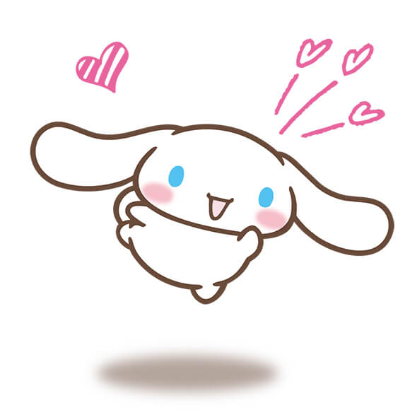
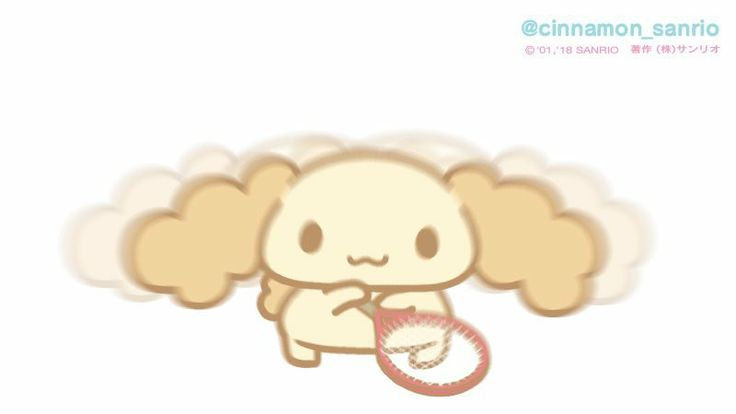
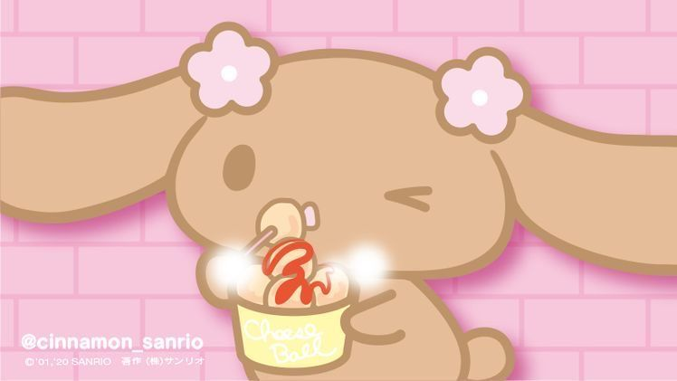
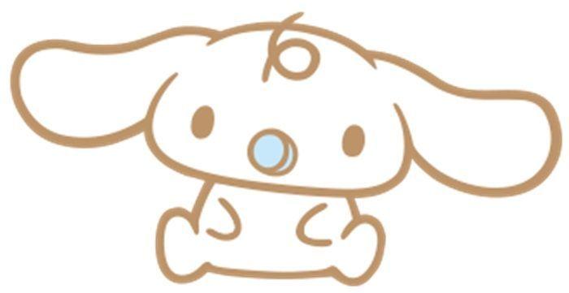

大耳狗
Hello! I'm Cinnamoroll ♡
一隻擁有大大耳朵和捲捲尾巴的小白狗。
最喜歡在天空中飛翔，也喜歡和大家一起度過快樂的時光！

Character Profile
姓名：大耳狗 Cinnamoroll
生日：3月6日
性別：男生
身高：像一杯大大的牛奶一樣高
特徵：長長的耳朵、捲捲的尾巴
喜歡的事物：和朋友玩耍、睡午覺
My Personality
♡ 溫柔
個性溫和，總是帶著可愛的笑容。
♡ 善良
喜歡幫助朋友，是大家的好夥伴。
♡ 活潑
喜歡在天空中飛翔，充滿好奇心。
My Friends
一起來認識大耳狗和他的好朋友們吧！♡
Cinnamoroll
大耳狗
擁有一雙大大的耳朵，喜歡在天空中飛翔，個性溫柔又善良。

Chiffon
希風
活潑又充滿元氣，總是帶著笑容，是個喜歡運動的女孩。

Mocha
摩卡
喜歡打扮自己，個性溫柔又成熟，是非常有時尚感的朋友。

Milk
牛奶
年紀還小的可愛小狗狗，喜歡喝牛奶，也很依賴大家。